HOUSE-PLANNER · MATERIAL STUDY住まいに置いて、比べる。
代表6モデルを既存カタログに追加しました。家具検索で「オリジナル」と入力して配置し、詳細設定の「素材・カラー」で色を変更できます。
比較画像は同じ照明・カメラ条件。各モデルの元の比率を保持しており、既存と新作の寸法・意匠は異なります。既存モデルの置換は行っていません。
ORIGINAL COLLECTION
オークフレーム ソファ
2100 × 900 × 820 mm
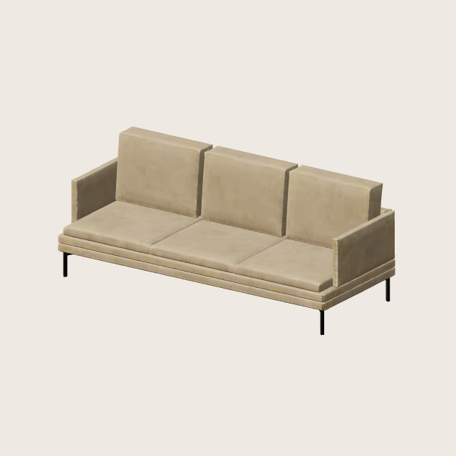
既存モデル fmp-Sofa01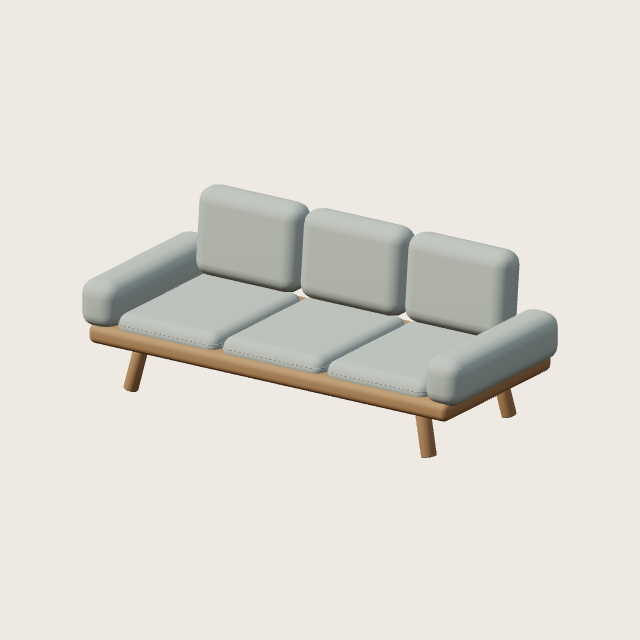
オリジナル 素材ごとに色変更できますORIGINAL COLLECTION
ラウンジチェア
720 × 760 × 790 mm
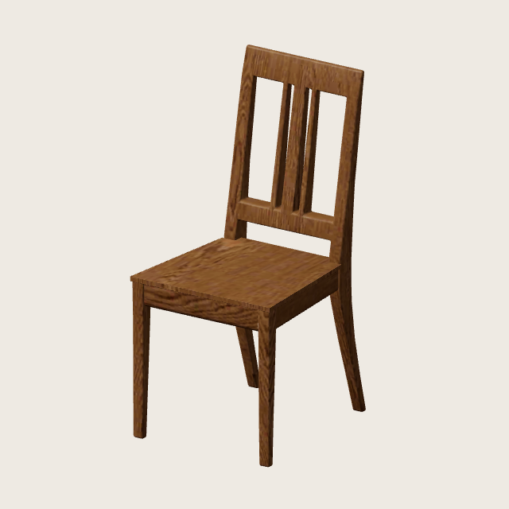
既存モデル fmp-Chair01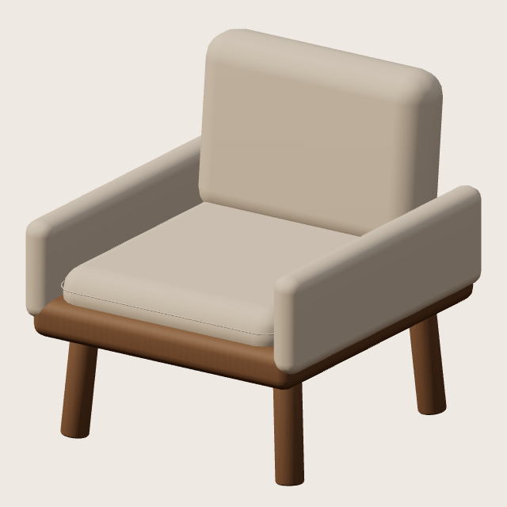
オリジナル 素材ごとに色変更できますORIGINAL COLLECTION
ファブリックヘッド ベッド
1600 × 2150 × 980 mm
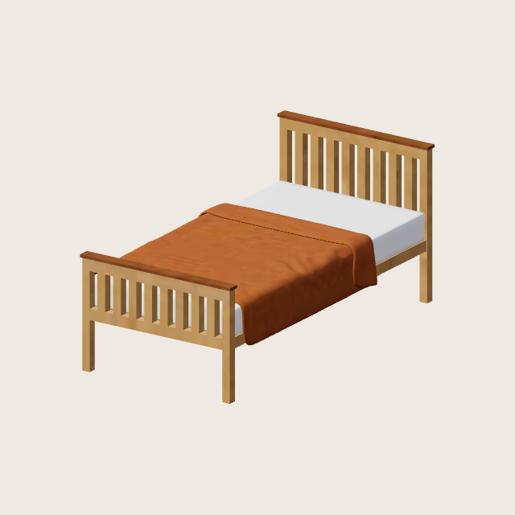
既存モデル fmp-Bed01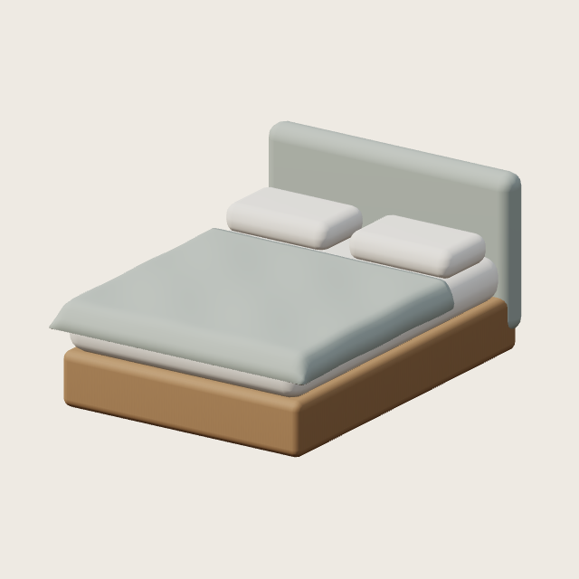
オリジナル 素材ごとに色変更できますORIGINAL COLLECTION
オーク ダイニングテーブル
1600 × 850 × 720 mm
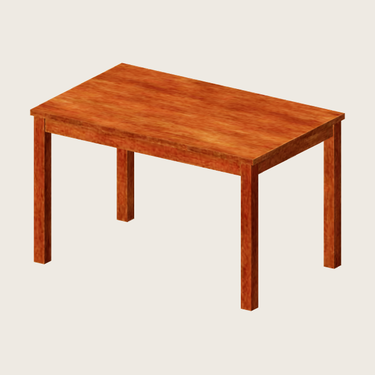
既存モデル fmp-Table01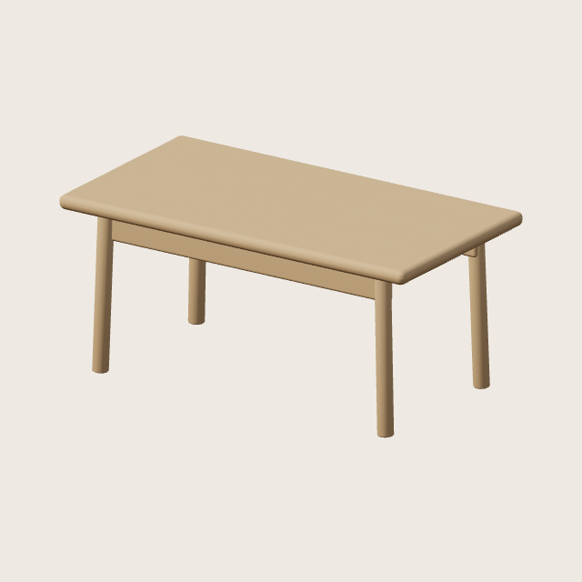
オリジナル 素材ごとに色変更できますORIGINAL COLLECTION
オーク サイドボード
1400 × 420 × 760 mm
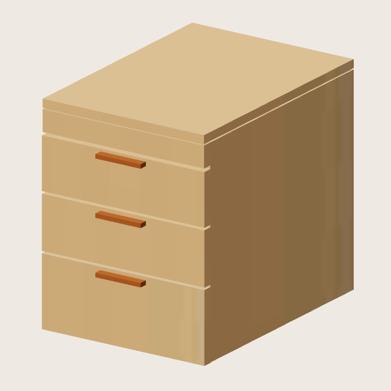
既存モデル fmp-Drawer01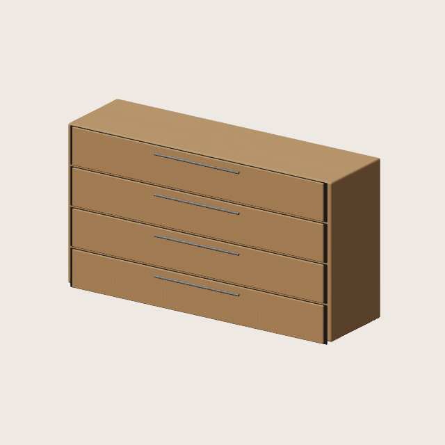
オリジナル 素材ごとに色変更できますORIGINAL COLLECTION
オーク ワードローブ
1000 × 580 × 1900 mm
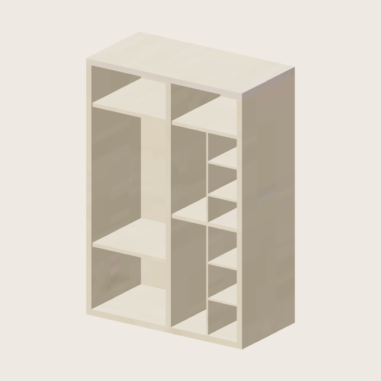
既存モデル fmp-Closet01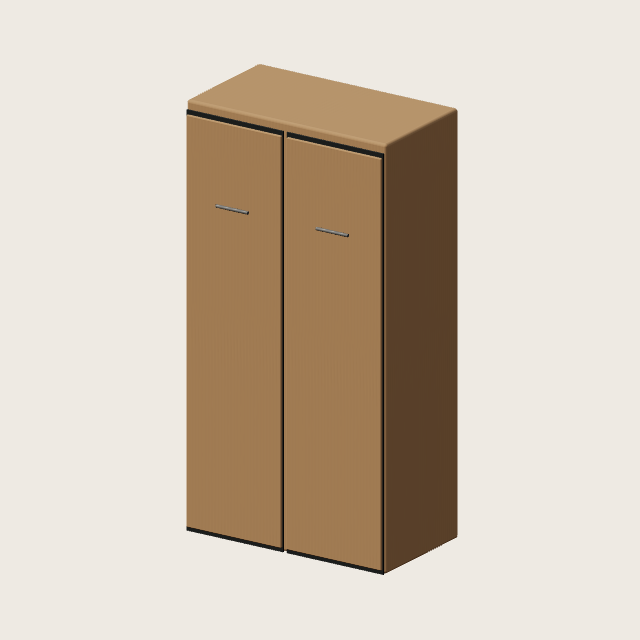
オリジナル 素材ごとに色変更できます前面 +Z / 上方向 +Y。編集可能なBlenderソースと再生成スクリプトを保存しています。